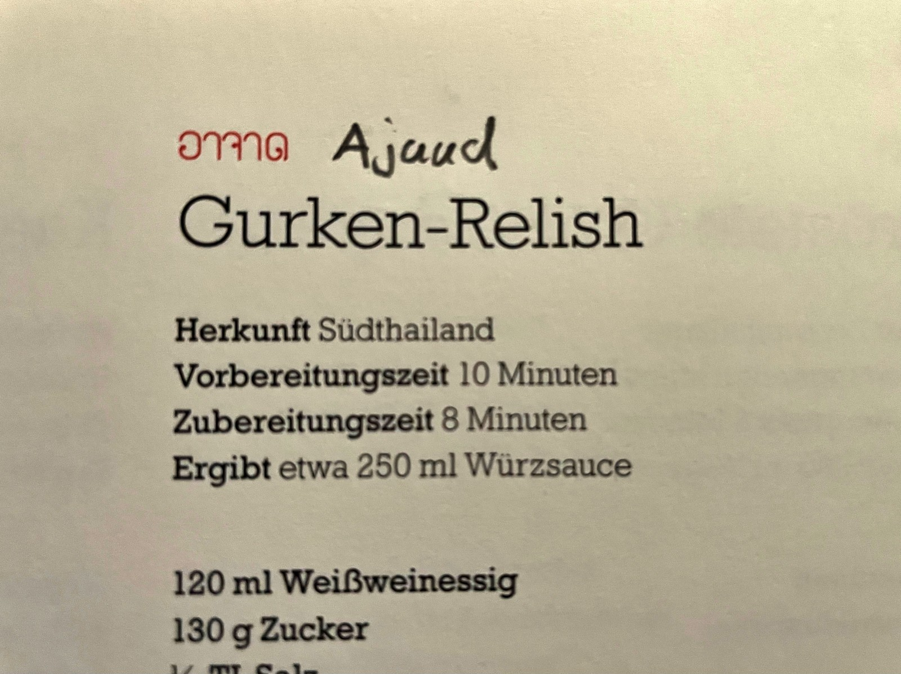

Digitales Thai Food Lexikon
Da es mich störte, dass in dem umfangreichen Kochbuch “Thailand: Das Kochbuch” bei den Rezepten keine Transkriptionen für die thailändischen Namen der Gerichte vermerkt sind und es nur zu wenigen Gerichten Bilder gibt, habe ich angefangen, diese Rezepte systematisch zu recherchieren, nachzukochen und sie in aufbereiteter Form auf meinem Blog Der Reiskoch aufzulisten.
Für die Recherche benutze ich online OCR-Werkzeuge, die der thailändischen Sprache mächtig sind und das Schwarmwissen aus den diversen Facebook-Gruppen, in denen ich unterwegs bin. Teilweise ist das recht anstrengend, da die verwendete Schriftart für die thailändischen Namen im Buch für Mensch und Maschine stellenweise sehr schlecht lesbar ist. Außerdem habe ich schon etliche fehlerhafte thailändische Bezeichnungen entdeckt.
Dann stellte ich mir die Frage, warum ich mich nur auf ein Buch beschränken sollte; ich könnte doch auch ein umfassendes Lexikon für thailändische Gerichte erstellen. Damit habe ich heute begonnen und mit den bereits erfassten Rezepten aus diesem Buch und einigen Rezepten von meinem Blog und aus anderen Quellen bin ich auf exakt 144 Einträge gekommen.
